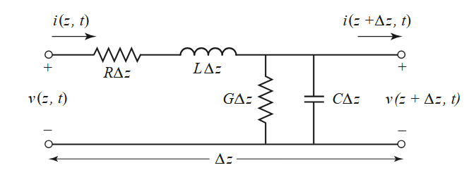
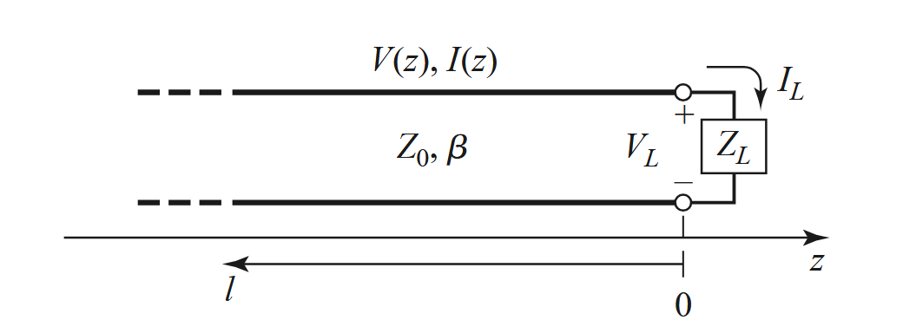
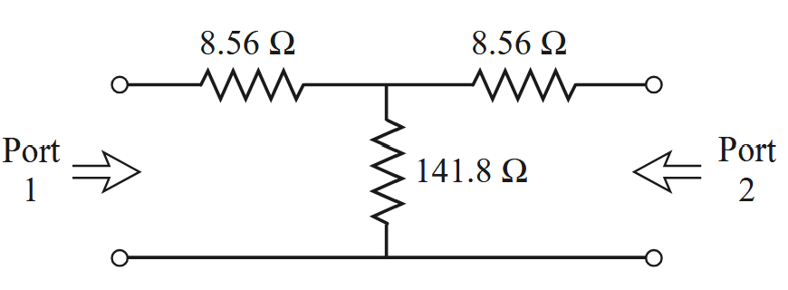
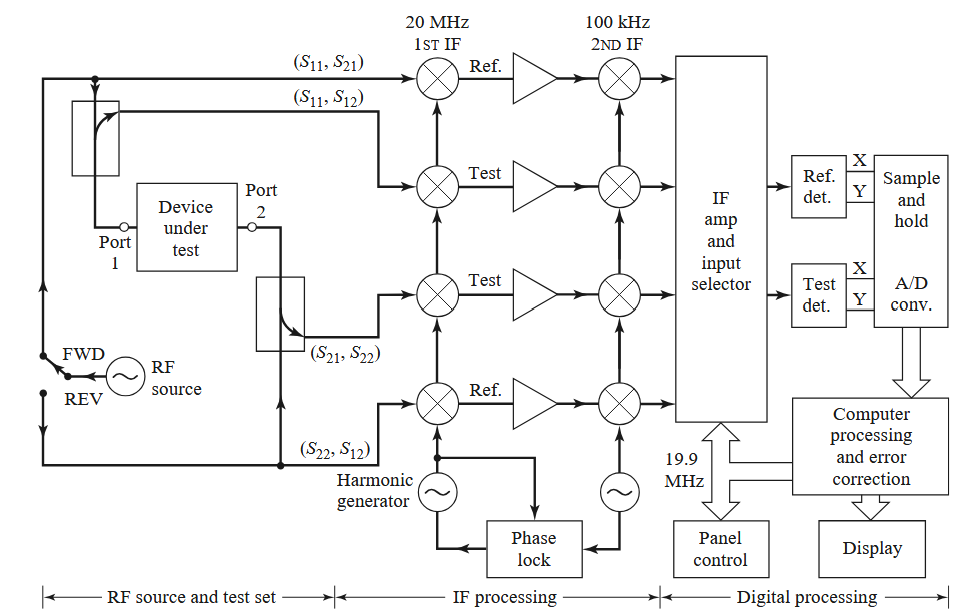
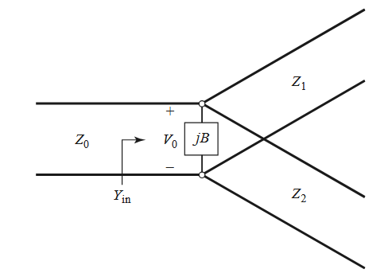
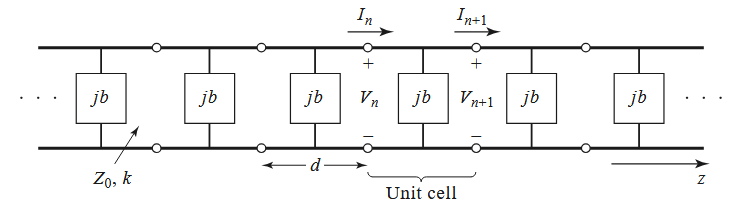

Pozar Microwave Engineering Notes
围绕传输线、反射、散射矩阵、功分滤波与噪声温度整理的微波工程笔记；正文保留原笔记内容，图片已转为网页相对资源。
Reading Map
从分布参数模型得到传播常数、特性阻抗与无耗极限。
端接不匹配带来反射、驻波与输入阻抗变换。
用入射波和反射波描述多端口网络，连接 VNA 测量语言。
周期结构产生通带与阻带，噪声温度和 Y-factor 描述低噪声链路。
Pozar Microwave Engineering Notes
2.1 The Lumped-Element Circuit Model for a Transmission Line

- Basic differential equations:
\[ \begin{aligned} & \frac{\partial v(z, t)}{\partial z}=-R i(z, t)-L \frac{\partial i(z, t)}{\partial t}, \\ & \frac{\partial i(z, t)}{\partial z}=-G v(z, t)-C \frac{\partial v(z, t)}{\partial t} . \end{aligned} \]
- sinusoidal steady-state condition:
\[ \begin{aligned} &\begin{aligned} & \frac{d^2 V(z)}{d z^2}-\gamma^2 V(z)=0 \\ & \frac{d^2 I(z)}{d z^2}-\gamma^2 I(z)=0 \end{aligned}\\ \text { where }\\ &\gamma=\alpha+j \beta=\sqrt{(R+j \omega L)(G+j \omega C)} \end{aligned} \]
- Characteristic Impedance:
\[ I(z)=\frac{\gamma}{R+j \omega L}\left(V_o^{+} e^{-\gamma z}-V_o^{-} e^{\gamma z}\right), \text{ therefore }Z_0=\frac{R+j \omega L}{\gamma}=\sqrt{\frac{R+j \omega L}{G+j \omega C}} \]
- Lossless line requires \(\alpha=0\) Clearly \(R=G=0\)，then \[ Z_0=\sqrt{\frac{L}{C}},\ v=\frac1{\sqrt{LC}} \] and it turns into something like electornic magnetic wave
2.3 The Terminated Lossless Transmission Line

However, when the line is terminated in an arbitrary load \(Z_L\neq Z_0\) (ZL can be a complex value!) the ratio of voltage to current at the load must be \(Z_L\). (while it’s Z0 in the normal case)
\[ I(z)=\frac{V_o^{+}}{Z_0} e^{-j \beta z}-\frac{V_o^{-}}{Z_0} e^{j \beta z}\text{, and }Z_L=\frac{V(0)}{I(0)}=\frac{V_o^{+}+V_o^{-}}{V_o^{+}-V_o^{-}} Z_0 \]
therefore \[ V_o^{-}=\frac{Z_L-Z_0}{Z_L+Z_0} V_o^{+}\text{, and }V(z)=V_o^{+}\left(e^{-j \beta z}+\Gamma e^{j \beta z}\right) \] and there’ll be a reflection unless \(Z_L=Z_0\)
- Time-average power flow (V, I are amplitudes here) (Gamma : reflection rate of V, i.e. \(V_o^-/V_o^+\))
\[ P_{\mathrm{avg}}=\frac{1}{2} \operatorname{Re}\left\{V(z) I(z)^*\right\}=\frac{1}{2} \frac{\left|V_o^{+}\right|^2}{Z_0}\left(1-|\Gamma|^2\right) \]
- Standing wave
Obvious. Standing Wave Ratio (SWR) \(:={V_{\max }}/{V_{\min }}=(1+|\Gamma|)/(1-|\Gamma|) .\)When Z_L -> 0, SWR -> +inf
- load with \(z\neq0\)
\[ \Gamma\rightarrow\Gamma e^{-2 j \beta \ell} \]
- Input impedance (measured impedance from the input ports) \[ Z_{\text {in }}=\frac{V(-\ell)}{I(-\ell)}=\frac{V_o^{+}\left(e^{j \beta \ell}+\Gamma e^{-j \beta \ell}\right)}{V_o^{+}\left(e^{j \beta \ell}-\Gamma e^{-j \beta \ell}\right)} Z_0=\frac{1+\Gamma e^{-2 j \beta \ell}}{1-\Gamma e^{-2 j \beta \ell}} Z_0 \] when \(Z_L\rightarrow 0\) (short circuit)
\[ V=\sin,\ I=\cos, Z_{\text {in }}=j Z_0 \tan \beta \ell \]
when \(\ell=\lambda/2\)，\(Z_{\text{in}}=Z_L\) ; when \(\ell=\lambda / 4+n \lambda / 2\), \(Z_{\text{in}}=Z_0^2/Z_L\)
Connecting 2 transmission lines (Z0 & Z1) \[ \Gamma=\frac{Z_1-Z_0}{Z_1+Z_0} \] assuming that \[ V(z)=V_o^{+} T e^{-j \beta z} \quad \text { for } z>0,\quad(\ V(z)=V_o^{+}\left(e^{-j \beta z}+\Gamma e^{j \beta z}\right), \quad z<0\ )\\ \Rightarrow T=1+\Gamma=\frac{2Z_L}{Z_L+Z_0}\\ \text{Insertion Loss \ \ \ IL=}-20\log\abs{T}\text{ dB} \]
dB and dBm: 10logP1/P0 dB. 1dBm=1mW. 10dBm=10mW, 20dBm=100mW …
4.3 The Scattering Matrix
\[ \left[\begin{array}{c} V_1^{-} \\ V_2^{-} \\ \vdots \\ V_N^{-} \end{array}\right]=\left[\begin{array}{cllc} S_{11} & S_{12} & \cdots & S_{1 N} \\ S_{21} & & & \vdots \\ S_{N 1} & \cdots & & S_{N N} \\ \vdots & & & \end{array}\right]\left[\begin{array}{c} V_1^{+} \\ V_2^{+} \\ \vdots \\ V_N^{+} \end{array}\right] \]
- Example: Attenuator, 50Ohm impedance matching

\[ S_{11}=\left.\frac{V_1^{-}}{V_1^{+}}\right|_{V_2^{+}=0}=\left.\Gamma^{(1)}\right|_{V_2^{+}=0}=\left.\frac{Z_{\text {in }}^{(1)}-Z_0}{Z_{\text {in }}^{(1)}+Z_0}\right|_{Z_0 \text { on port } 2}\approx0 \]\[ V_2^{-}=V_2=V_1\left(\frac{41.44}{41.44+8.56}\right)\left(\frac{50}{50+8.56}\right)=0.707 V_1\Rightarrow S_{21}=0.707 \]
- Deduction from impedance matrix: \[ \begin{align} V&=V^++V^-\\ I&=I^+-I^-=V^+-V^-\text{ (assuming }Z_0=1\text{)} \end{align} \]
\[ \mathbf{ZI}=\mathbf{ZV}^+-\mathbf{ZV}^-=\mathbf{V}=\mathbf{V}^++\mathbf{V}^-\\ \Rightarrow \mathbf{S}=(\mathbf{Z}+\mathbb{I})^{-1}(\mathbf{Z}-\mathbb{I}) \]
it’s easy to prove that scattering matrix is symmetric for reciprocal networks(Sij=Sji)
lossless network: \[ P_{\mathrm{avg}}=\frac{1}{2} \operatorname{Re}\left\{\mathbf{V}^t\mathbf{I}^*\right\}=\frac{1}{2}\mathbf{V}^{+t}\mathbf{V}^{+*}-\frac{1}{2}\mathbf{V}^{-t}\mathbf{V}^{-*} \]
\[ \Rightarrow \mathbf{S}^\text{T}\mathbf{S}^*=\mathbb{I} \]
in other words, S is Hermitian/Unitary
Plane Transformation
\[ V'^+=e^{j\theta}V^+ \Rightarrow \mathbf{S'}=\text{diag}\{e^{-j\theta_1},...,e^{-j\theta_n}\}\mathbf{S}\text{diag}\{e^{-j\theta_1},...,e^{-j\theta_n}\} \]
- Power Waves and Generalized Scattering Parameters
[V0]--Z_L--[V1]Z_R任取。 \[ \left\{\begin{align} a=\frac{V+Z_R I}{2 \sqrt{R_R}}\\ b=\frac{V-Z_R^* I}{2 \sqrt{R_R}} \end{align}\right. \] where \(Z_R=R_R+j X_R\)
by adopting these two parameters, we get \[ P_L=\frac12\Re{VI^*}=\frac12\abs{a}^2-\frac12\abs{b}^2,\ \Gamma_p=\frac ba=\frac{Z_L-Z_R^*}{Z_L+Z_R} \]
- The VNA

Dividers and Filters
Dividers
- T-Junctions
It can be proved that a three-port network cannot be simultaneously lossless, reciprocal, and matched at all ports.
- Assume it’s not reciprocal, then
\[ \mathbf{S}=\left[\begin{array}{ccc} 0 & S_{12} & S_{13} \\ S_{21} & 0 & S_{23} \\ S_{31} & S_{32} & 0 \end{array}\right] \]
satisfying \[ \begin{aligned} S_{31}^* S_{32} & =0, \\ S_{21}^* S_{23} & =0, \\ S_{12}^* S_{13} & =0, \\ \left|S_{12}\right|^2+\left|S_{13}\right|^2 & =1, \\ \left|S_{21}\right|^2+\left|S_{23}\right|^2 & =1, \\ \left|S_{31}\right|^2+\left|S_{32}\right|^2 & =1 . \end{aligned} \] This could be achieved by \[ \begin{aligned} &S_{12}=S_{23}=S_{31}=0, \quad\left|S_{21}\right|=\left|S_{32}\right|=\left|S_{13}\right|=1,\\ &\text { or }\\ &S_{21}=S_{32}=S_{13}=0, \quad\left|S_{12}\right|=\left|S_{23}\right|=\left|S_{31}\right|=1 . \end{aligned} \] which is a circulator.
Assume it’s not matched, then \[\mathbf{S}_{ii}\] could be a non-zero value.
it turns out to be \[ [S]=\left[\begin{array}{ccc} 0 & e^{j \theta} & 0 \\ e^{j \theta} & 0 & 0 \\ 0 & 0 & e^{j \phi} \end{array}\right] \]
T junction structure

\[ Y_{\text {in }}=j B+\frac{1}{Z_1}+\frac{1}{Z_2}=\frac{1}{Z_0} \]Filters
- Periodic Structure

\[ \left[\begin{array}{l} V_n \\ I_n \end{array}\right]=\left[\begin{array}{ll} A & B \\ C & D \end{array}\right]\left[\begin{array}{l} V_{n+1} \\ I_{n+1} \end{array}\right] \] where \[ \begin{aligned} {\left[\begin{array}{ll} A & B \\ C & D \end{array}\right] } & =\left[\begin{array}{cc} \cos \frac{\theta}{2} & j \sin \frac{\theta}{2} \\ j \sin \frac{\theta}{2} & \cos \frac{\theta}{2} \end{array}\right]\left[\begin{array}{cc} 1 & 0 \\ j b & 1 \end{array}\right]\left[\begin{array}{cc} \cos \frac{\theta}{2} & j \sin \frac{\theta}{2} \\ j \sin \frac{\theta}{2} & \cos \frac{\theta}{2} \end{array}\right] \\ & =\left[\begin{array}{cc} \left(\cos \theta-\frac{b}{2} \sin \theta\right) & j\left(\sin \theta+\frac{b}{2} \cos \theta-\frac{b}{2}\right) \\ j\left(\sin \theta+\frac{b}{2} \cos \theta+\frac{b}{2}\right) & \left(\cos \theta-\frac{b}{2} \sin \theta\right) \end{array}\right] \end{aligned} \] (assume Z0=1, susceptance b is normalized to Z0) (this is a lossless transmission line)For a wave propagating in the +z direction, we must have \[ \begin{aligned} V(z) & =V(0) e^{-\gamma z} \\ I(z) & =I(0) e^{-\gamma z} \end{aligned} \] put this into the previous linear equation, it becomes a homogeneous linear system. Check the determinant, we get \[ \cosh \gamma d=\cosh \alpha d \cos \beta d+j \sinh \alpha d \sin \beta d=\cos \theta-\frac{b}{2} \sin \theta \] Since the right-hand side of (8.8) is purely real, we must have either α = 0 or β = 0.
whether it’s attenuated depends on whether \(\abs{\cos \theta-\frac{b}{2} \sin \theta}>1\) or not. The attenuated part is probably reflected.
Thus, depending on the frequency and normalized susceptance values, the periodically loaded line will exhibit either passbands or stopbands, and so can be considered as a type of filter.
Characteristic Impedance: (for symmetric unit cells) \[ Z_B = Z_0 \frac{V_{n+1}}{I_{n+1}} =\frac{ \pm B Z_0}{\sqrt{A^2-1}} \]
10.1 Noise and Nonlinear Distortion
- Thermal noise:
\[ V_n=\sqrt{\frac{4 h f B R}{e^{h f / k T}-1}}=\sqrt{4kTBR}\Rightarrow P=kTB \]
Equivalent tenperature \[ T_e=\frac{N_o}{(G)k B} \]
- Y-factor
\[ \begin{aligned} & N_1=G k T_1 B+G k T_e B, \\ & N_2=G k T_2 B+G k T_e B, \end{aligned}\\ \]
\[ Y=\frac{N_1}{N_2}=\frac{T_1+T_e}{T_2+T_e}>1,\ Y=\frac{N_1}{N_2}=\frac{T_1+T_e}{T_2+T_e}>1 \]